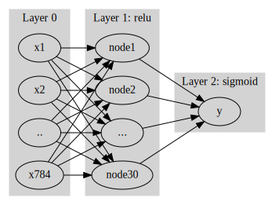

import
[PhysicalDevice(name='/physical_device:CPU:0', device_type='CPU')]중간고사 관련 잡담
중간고사 3번문제
- 특이한 모형 : 오버핏이 일어날 수 없는 모형이다.
- 회귀분석은 과적합이 안된다! \(\to\) 알아서 \(n\)이 커질수록 유의미하지 않은 변수들을 거슬러줌 * 모형이 스스로 변수에 coffecient에 대한 유의성 검정을 수행 따라서 과적합 이슈가 없다 * keypoint : 무조건 변수가 많다고 과적합이 일어나지 않음 * 빨강, 노랑, 파랑으로 모든 색깔을 표현 가능(\(\star\star\star\))
중간고사 1-(3)번 문제
경사하강법과 확률적경사하강법
- 확률적 경사하강법을 오늘부터 배울 거임!!
ver1: 모든 샘플을 사용하여 slope계산 (Gradient decent)
기본까지 했던 방법
10개의 샘플을 관측!
(epoch1) \(loss=\sum_{i=1}^{10}(y_i-\beta_0-\beta_1x_i)^2 \quad \to \quad slope \quad \to \quad update\)
(epoch2) \(loss=\sum_{i=1}^{10}(y_i-\beta_0-\beta_1x_i)^2 \quad \to \quad slope \quad \to \quad update\)
…
ver2: 하나의 샘플만 사용하여 slope계산(stochastic gradient descent)
- (epoch이 3번이면 for문이 30번돌아감)
(epoch1) - \(loss=(y_1-\beta_0-\beta_1x_1)^2 \quad \to \quad slope \quad \to \quad update\) - \(loss=(y_2-\beta_0-\beta_1x_2)^2 \quad \to \quad slope \quad \to \quad update\) - … - \(loss=(y_{10}-\beta_0-\beta_1x_{10})^2 \quad \to \quad slope \quad \to \quad update\)
(epoch2) - \(loss=(y_1-\beta_0-\beta_1x_1)^2 \quad \to \quad slope \quad \to \quad update\) - \(loss=(y_2-\beta_0-\beta_1x_1)^2 \quad \to \quad slope \quad \to \quad update\) - … - \(loss=(y_{10}-\beta_0-\beta_1x_{10})^2 \quad \to \quad slope \quad \to \quad update\)
- 총 쏘는거 생각 :
ver2는 동일한 총알이 주어졌을 때 그냥 막 쏘는거임 - 동일 iteration 대비 효율이 좋은 것은
ver1이다.- 왜냐 ver1의경우
iteration == epoch이기 때문!
- 왜냐 ver1의경우
- 동일 epoch 대비 효율이 좋은 것도
ver1이다. - 정확도 또한 ver1이 더 높을 것이다. 그러나 이터레이셧 횟수는 ver2가 더 많을 것이다.
- ver1은 모든 샘플을 고려해 한번에 기울기를 계산(질로 승부), ver2는 양으로 승부하는 것이라고 생각한다.
ver3: \(m(\leq n)\)개의 샘플만 사용하여 slope계산
\(m=3\)이라고 하자.
(epoch1) - \(loss=\sum_{i=1}^{3}(y_i-\beta_0-\beta_1x_i)^2 \quad \to \quad slope \quad \to \quad update\) - \(loss=\sum_{i=4}^{6}(y_i-\beta_0-\beta_1x_i)^2 \quad \to \quad slope \quad \to \quad update\) - \(loss=\sum_{i=7}^{9}(y_i-\beta_0-\beta_1x_i)^2 \quad \to \quad slope \quad \to \quad update\) - \(loss=(y_{10}-\beta_0-\beta_1x_{10})^2 \quad \to \quad slope \quad \to \quad update\)
(epoch2) - \(loss=\sum_{i=1}^{3}(y_i-\beta_0-\beta_1x_i)^2 \quad \to \quad slope \quad \to \quad update\) - \(loss=\sum_{i=4}^{6}(y_i-\beta_0-\beta_1x_i)^2 \quad \to \quad slope \quad \to \quad update\) - \(loss=\sum_{i=7}^{9}(y_i-\beta_0-\beta_1x_i)^2 \quad \to \quad slope \quad \to \quad update\) - \(loss=(y_{10}-\beta_0-\beta_1x_{10})^2 \quad \to \quad slope \quad \to \quad update\)
…
- Ver 3의 겨우 파라미터 업데이트시 한번도 사용이 안되는 샘플이 존재할 수 가 있다.
용어의 정리
옛날 (좀 더 엄밀)
- ver1: gradient descent, batch gradient descent
- ver2: stochastic gradient descent (확률적 경사 하강법)
- ver3: mini-batch gradient descent, mini-batch stochastic gradient descent
요즘
- ver1: gradient descent
- ver2: stochastic gradient descent with batch size = 1
- ver3: stochastic gradient descent (확률적 경사하강법) - https://www.deeplearningbook.org/contents/optimization.html, 알고리즘 8-1 참고.
note: 이렇게 많이 쓰는 이유? ver1,2는 사실상 없는 방법이므로
ver1,2,3 이외에 좀 더 지저분한 것들이 있다.
- ver2,3에서 샘플을 셔플할 수도 있다.
- ver3에서 일부 샘플이 학습에 참여 안하는 버전도 있다.
- 개인적 생각: 크게3개정도만 알면 괜찮고 나머지는 그렇게 유의미하지 않아보인다.
Discussion
- 핵심개념 - 메모리사용량: ver1 > ver3 > ver2 (한번에 한개의 파라미터를 업데이트 할 때!!) - 계산속도: ver1 > ver3 > ver2 (한번에 한개의 파라미터를 업데이트 할 때!!) - local-min에 갇힘: ver1> ver3 > ver2 (이건 알고리즘 구성의 차이)
* ver1 은 local-min을 잘 찾는다 * ver2, ver3은 운좋게 local-min을 탈출한다
- 본질: GPU 메모리가 한정되어 있어서 ver1을 쓰지는 못한다. GPU 메모리를 가장 적게쓰는것은 ver2인데 이것은 너무 불안정하다.
- 틀리진 않지만 어색한 블로그 정리 내용들 - 경사하강법은 종종 국소최소점에 갇히는 문제가 있다. 이를 해결하기 위해서 등장한 방법이 확률적 경사하강법이다.(X) * 틀린말은 아니나 그것을 의도하고 만든 것은 아님, 가끔 그럴 때도 있는 것이지 확률적 경사하강법을 쓴다고 local_minimum에 빠지지 않는 것은 아니다. - 경사하강법은 계산시간이 오래걸린다(O). 계산을 빠르게 하기 위해서 등장한 방법이 확률적 경사하강법이다.(O) * 1회 업데이트는 빠르게 계산하나, 하지만 그것이 최적의 \(\beta\)를 빠르게 얻을 수 있는 것은 아님
- 결론
- 확률적 경사하강법을 쓰는 이유는 메모리적 문제이다. 메모리를 아끼기 위해 우리는
tf.Variable을 이용한다. 그런데Gradient를 계산하려면loss를 계산해야 하고 샘플(y,yhat)을 전부 메모리상에 올려야한다. - 위 같은 경우 GPU가 샘플의 일부만 올라갈 수 있다면 미니배치방법인 확률적 경사하강법을 사용해야기 때문에 확률적경사하강법을 우리가 사용하는 이유다.
- 확률적 경사하강법을 쓰는 이유는 메모리적 문제이다. 메모리를 아끼기 위해 우리는
fashion_mnist 모듈
tf.keras.datasets.fashion_mnist.load_data()
데이터생성 및 탐색
- tf.keras.datasets.fashion_mnist.load_data()를 이용한 데이터 생성
__call__: 오브젝트가 숨겨져있음 \(\to\) 괄호를 열고 닫으면 오브젝트가 생성됨enter와exit가 없으면with를 같이 쓸 수 없음
['__annotations__',
'__call__',
'__class__',
'__closure__',
'__code__',
'__defaults__',
'__delattr__',
'__dict__',
'__dir__',
'__doc__',
'__eq__',
'__format__',
'__ge__',
'__get__',
'__getattribute__',
'__globals__',
'__gt__',
'__hash__',
'__init__',
'__init_subclass__',
'__kwdefaults__',
'__le__',
'__lt__',
'__module__',
'__name__',
'__ne__',
'__new__',
'__qualname__',
'__reduce__',
'__reduce_ex__',
'__repr__',
'__setattr__',
'__sizeof__',
'__str__',
'__subclasshook__',
'_keras_api_names',
'_keras_api_names_v1']Downloading data from https://storage.googleapis.com/tensorflow/tf-keras-datasets/train-labels-idx1-ubyte.gz
32768/29515 [=================================] - 0s 0us/step
40960/29515 [=========================================] - 0s 0us/step
Downloading data from https://storage.googleapis.com/tensorflow/tf-keras-datasets/train-images-idx3-ubyte.gz
26427392/26421880 [==============================] - 0s 0us/step
26435584/26421880 [==============================] - 0s 0us/step
Downloading data from https://storage.googleapis.com/tensorflow/tf-keras-datasets/t10k-labels-idx1-ubyte.gz
16384/5148 [===============================================================================================] - 0s 0us/step
Downloading data from https://storage.googleapis.com/tensorflow/tf-keras-datasets/t10k-images-idx3-ubyte.gz
4423680/4422102 [==============================] - 0s 0us/step
4431872/4422102 [==============================] - 0s 0us/step- 코드를 바로 뜯어보고 구글링은 최후 수단으로 하자
데이터구조

- 오 왠지 11번째 데이터도 신발일 것 같에
- \(\bf{X} : (n,28,28)\)
- \(y\) : 각 이미지의 라벨 데이터
예제1
데이터 정리
- \(y=0,1\)에 대응하는 이미지만 정리하자. (우리가 배운건 로지스틱이니깐)
풀이1: 은닉층을 포함한 신경망 // epochs=100
#collapse
gv('''
splines=line
subgraph cluster_1{
style=filled;
color=lightgrey;
"x1"
"x2"
".."
"x784"
label = "Layer 0"
}
subgraph cluster_2{
style=filled;
color=lightgrey;
"x1" -> "node1"
"x2" -> "node1"
".." -> "node1"
"x784" -> "node1"
"x1" -> "node2"
"x2" -> "node2"
".." -> "node2"
"x784" -> "node2"
"x1" -> "..."
"x2" -> "..."
".." -> "..."
"x784" -> "..."
"x1" -> "node30"
"x2" -> "node30"
".." -> "node30"
"x784" -> "node30"
label = "Layer 1: relu"
}
subgraph cluster_3{
style=filled;
color=lightgrey;
"node1" -> "y"
"node2" -> "y"
"..." -> "y"
"node30" -> "y"
label = "Layer 2: sigmoid"
}
''')
tf.random.set_seed(43052)
net = tf.keras.Sequential()
net.add(tf.keras.layers.Dense(30,activation='relu'))
net.add(tf.keras.layers.Dense(1,activation='sigmoid'))
net.compile(optimizer='sgd',loss=tf.losses.binary_crossentropy)
net.fit(X,y,epochs=100,batch_size=12000,verbose=0) <keras.callbacks.History at 0x7f44601b7990>loss는 미분하기위한 정보지 성능에 대한 정보는 아니다.train
test
local_min에 빠져서 못 나오는 것임(verbose=1로하고 loss를 살펴볼 줄 알아야한다)초기값문제가 아닌 옵티마이저의 문제임\((\star\star\star)\)
풀이2: 옵티마이저 개선
tf.random.set_seed(43051)
net = tf.keras.Sequential()
net.add(tf.keras.layers.Dense(30,activation='relu'))
net.add(tf.keras.layers.Dense(1,activation='sigmoid'))
net.compile(optimizer='adam',loss=tf.losses.binary_crossentropy)
net.fit(X,y,epochs=100,batch_size=12000,verbose=0) <keras.callbacks.History at 0x7f445e8ef250>풀이3: 컴파일시 metrics=[‘accuracy’] 추가
tf.random.set_seed(43055)
net = tf.keras.Sequential()
net.add(tf.keras.layers.Dense(30,activation='relu'))
net.add(tf.keras.layers.Dense(1,activation='sigmoid'))
net.compile(optimizer='adam',loss=tf.losses.binary_crossentropy,metrics=['accuracy'])
net.fit(X,y,epochs=100,batch_size=12000) Epoch 1/100
1/1 [==============================] - 0s 486ms/step - loss: 100.9425 - accuracy: 0.4988
Epoch 2/100
1/1 [==============================] - 0s 82ms/step - loss: 44.4441 - accuracy: 0.3741
Epoch 3/100
1/1 [==============================] - 0s 75ms/step - loss: 29.2322 - accuracy: 0.4321
Epoch 4/100
1/1 [==============================] - 0s 109ms/step - loss: 22.6921 - accuracy: 0.5399
Epoch 5/100
1/1 [==============================] - 0s 69ms/step - loss: 8.7741 - accuracy: 0.7321
Epoch 6/100
1/1 [==============================] - 0s 63ms/step - loss: 4.6409 - accuracy: 0.8516
Epoch 7/100
1/1 [==============================] - 0s 65ms/step - loss: 5.2642 - accuracy: 0.8711
Epoch 8/100
1/1 [==============================] - 0s 69ms/step - loss: 6.1993 - accuracy: 0.8771
Epoch 9/100
1/1 [==============================] - 0s 66ms/step - loss: 6.5543 - accuracy: 0.8845
Epoch 10/100
1/1 [==============================] - 0s 68ms/step - loss: 6.3454 - accuracy: 0.8953
Epoch 11/100
1/1 [==============================] - 0s 66ms/step - loss: 5.7887 - accuracy: 0.9062
Epoch 12/100
1/1 [==============================] - 0s 67ms/step - loss: 5.1074 - accuracy: 0.9168
Epoch 13/100
1/1 [==============================] - 0s 69ms/step - loss: 4.4821 - accuracy: 0.9276
Epoch 14/100
1/1 [==============================] - 0s 71ms/step - loss: 3.9864 - accuracy: 0.9359
Epoch 15/100
1/1 [==============================] - 0s 64ms/step - loss: 3.6388 - accuracy: 0.9402
Epoch 16/100
1/1 [==============================] - 0s 71ms/step - loss: 3.4077 - accuracy: 0.9412
Epoch 17/100
1/1 [==============================] - 0s 65ms/step - loss: 3.2687 - accuracy: 0.9415
Epoch 18/100
1/1 [==============================] - 0s 72ms/step - loss: 3.1829 - accuracy: 0.9404
Epoch 19/100
1/1 [==============================] - 0s 63ms/step - loss: 3.1196 - accuracy: 0.9388
Epoch 20/100
1/1 [==============================] - 0s 71ms/step - loss: 3.0526 - accuracy: 0.9380
Epoch 21/100
1/1 [==============================] - 0s 65ms/step - loss: 2.9635 - accuracy: 0.9371
Epoch 22/100
1/1 [==============================] - 0s 80ms/step - loss: 2.8397 - accuracy: 0.9376
Epoch 23/100
1/1 [==============================] - 0s 66ms/step - loss: 2.6812 - accuracy: 0.9389
Epoch 24/100
1/1 [==============================] - 0s 65ms/step - loss: 2.4916 - accuracy: 0.9396
Epoch 25/100
1/1 [==============================] - 0s 81ms/step - loss: 2.2804 - accuracy: 0.9408
Epoch 26/100
1/1 [==============================] - 0s 65ms/step - loss: 2.0630 - accuracy: 0.9433
Epoch 27/100
1/1 [==============================] - 0s 74ms/step - loss: 1.8600 - accuracy: 0.9470
Epoch 28/100
1/1 [==============================] - 0s 70ms/step - loss: 1.6744 - accuracy: 0.9488
Epoch 29/100
1/1 [==============================] - 0s 68ms/step - loss: 1.5003 - accuracy: 0.9510
Epoch 30/100
1/1 [==============================] - 0s 65ms/step - loss: 1.3529 - accuracy: 0.9531
Epoch 31/100
1/1 [==============================] - 0s 74ms/step - loss: 1.2575 - accuracy: 0.9542
Epoch 32/100
1/1 [==============================] - 0s 68ms/step - loss: 1.1763 - accuracy: 0.9553
Epoch 33/100
1/1 [==============================] - 0s 69ms/step - loss: 1.0853 - accuracy: 0.9567
Epoch 34/100
1/1 [==============================] - 0s 78ms/step - loss: 0.9978 - accuracy: 0.9587
Epoch 35/100
1/1 [==============================] - 0s 68ms/step - loss: 0.9337 - accuracy: 0.9603
Epoch 36/100
1/1 [==============================] - 0s 65ms/step - loss: 0.8893 - accuracy: 0.9617
Epoch 37/100
1/1 [==============================] - 0s 69ms/step - loss: 0.8503 - accuracy: 0.9627
Epoch 38/100
1/1 [==============================] - 0s 66ms/step - loss: 0.8154 - accuracy: 0.9632
Epoch 39/100
1/1 [==============================] - 0s 67ms/step - loss: 0.7843 - accuracy: 0.9642
Epoch 40/100
1/1 [==============================] - 0s 68ms/step - loss: 0.7548 - accuracy: 0.9654
Epoch 41/100
1/1 [==============================] - 0s 65ms/step - loss: 0.7288 - accuracy: 0.9663
Epoch 42/100
1/1 [==============================] - 0s 70ms/step - loss: 0.7061 - accuracy: 0.9674
Epoch 43/100
1/1 [==============================] - 0s 65ms/step - loss: 0.6844 - accuracy: 0.9687
Epoch 44/100
1/1 [==============================] - 0s 66ms/step - loss: 0.6640 - accuracy: 0.9693
Epoch 45/100
1/1 [==============================] - 0s 77ms/step - loss: 0.6427 - accuracy: 0.9710
Epoch 46/100
1/1 [==============================] - 0s 75ms/step - loss: 0.6187 - accuracy: 0.9716
Epoch 47/100
1/1 [==============================] - 0s 65ms/step - loss: 0.5933 - accuracy: 0.9723
Epoch 48/100
1/1 [==============================] - 0s 75ms/step - loss: 0.5693 - accuracy: 0.9730
Epoch 49/100
1/1 [==============================] - 0s 68ms/step - loss: 0.5471 - accuracy: 0.9733
Epoch 50/100
1/1 [==============================] - 0s 70ms/step - loss: 0.5253 - accuracy: 0.9737
Epoch 51/100
1/1 [==============================] - 0s 65ms/step - loss: 0.5031 - accuracy: 0.9744
Epoch 52/100
1/1 [==============================] - 0s 68ms/step - loss: 0.4805 - accuracy: 0.9750
Epoch 53/100
1/1 [==============================] - 0s 66ms/step - loss: 0.4572 - accuracy: 0.9767
Epoch 54/100
1/1 [==============================] - 0s 67ms/step - loss: 0.4368 - accuracy: 0.9775
Epoch 55/100
1/1 [==============================] - 0s 73ms/step - loss: 0.4180 - accuracy: 0.9778
Epoch 56/100
1/1 [==============================] - 0s 69ms/step - loss: 0.3991 - accuracy: 0.9783
Epoch 57/100
1/1 [==============================] - 0s 62ms/step - loss: 0.3828 - accuracy: 0.9791
Epoch 58/100
1/1 [==============================] - 0s 67ms/step - loss: 0.3701 - accuracy: 0.9793
Epoch 59/100
1/1 [==============================] - 0s 78ms/step - loss: 0.3568 - accuracy: 0.9793
Epoch 60/100
1/1 [==============================] - 0s 66ms/step - loss: 0.3426 - accuracy: 0.9805
Epoch 61/100
1/1 [==============================] - 0s 78ms/step - loss: 0.3286 - accuracy: 0.9813
Epoch 62/100
1/1 [==============================] - 0s 70ms/step - loss: 0.3165 - accuracy: 0.9822
Epoch 63/100
1/1 [==============================] - 0s 67ms/step - loss: 0.3051 - accuracy: 0.9827
Epoch 64/100
1/1 [==============================] - 0s 73ms/step - loss: 0.2929 - accuracy: 0.9827
Epoch 65/100
1/1 [==============================] - 0s 69ms/step - loss: 0.2836 - accuracy: 0.9827
Epoch 66/100
1/1 [==============================] - 0s 70ms/step - loss: 0.2753 - accuracy: 0.9830
Epoch 67/100
1/1 [==============================] - 0s 64ms/step - loss: 0.2664 - accuracy: 0.9835
Epoch 68/100
1/1 [==============================] - 0s 65ms/step - loss: 0.2574 - accuracy: 0.9843
Epoch 69/100
1/1 [==============================] - 0s 66ms/step - loss: 0.2493 - accuracy: 0.9845
Epoch 70/100
1/1 [==============================] - 0s 69ms/step - loss: 0.2411 - accuracy: 0.9852
Epoch 71/100
1/1 [==============================] - 0s 67ms/step - loss: 0.2335 - accuracy: 0.9852
Epoch 72/100
1/1 [==============================] - 0s 64ms/step - loss: 0.2267 - accuracy: 0.9852
Epoch 73/100
1/1 [==============================] - 0s 75ms/step - loss: 0.2198 - accuracy: 0.9858
Epoch 74/100
1/1 [==============================] - 0s 64ms/step - loss: 0.2137 - accuracy: 0.9866
Epoch 75/100
1/1 [==============================] - 0s 71ms/step - loss: 0.2075 - accuracy: 0.9866
Epoch 76/100
1/1 [==============================] - 0s 71ms/step - loss: 0.2013 - accuracy: 0.9873
Epoch 77/100
1/1 [==============================] - 0s 69ms/step - loss: 0.1954 - accuracy: 0.9875
Epoch 78/100
1/1 [==============================] - 0s 67ms/step - loss: 0.1903 - accuracy: 0.9879
Epoch 79/100
1/1 [==============================] - 0s 69ms/step - loss: 0.1850 - accuracy: 0.9883
Epoch 80/100
1/1 [==============================] - 0s 68ms/step - loss: 0.1801 - accuracy: 0.9882
Epoch 81/100
1/1 [==============================] - 0s 67ms/step - loss: 0.1751 - accuracy: 0.9886
Epoch 82/100
1/1 [==============================] - 0s 68ms/step - loss: 0.1708 - accuracy: 0.9893
Epoch 83/100
1/1 [==============================] - 0s 65ms/step - loss: 0.1671 - accuracy: 0.9893
Epoch 84/100
1/1 [==============================] - 0s 64ms/step - loss: 0.1629 - accuracy: 0.9893
Epoch 85/100
1/1 [==============================] - 0s 64ms/step - loss: 0.1592 - accuracy: 0.9898
Epoch 86/100
1/1 [==============================] - 0s 68ms/step - loss: 0.1553 - accuracy: 0.9898
Epoch 87/100
1/1 [==============================] - 0s 78ms/step - loss: 0.1514 - accuracy: 0.9898
Epoch 88/100
1/1 [==============================] - 0s 71ms/step - loss: 0.1479 - accuracy: 0.9900
Epoch 89/100
1/1 [==============================] - 0s 68ms/step - loss: 0.1441 - accuracy: 0.9900
Epoch 90/100
1/1 [==============================] - 0s 64ms/step - loss: 0.1409 - accuracy: 0.9899
Epoch 91/100
1/1 [==============================] - 0s 68ms/step - loss: 0.1373 - accuracy: 0.9902
Epoch 92/100
1/1 [==============================] - 0s 70ms/step - loss: 0.1340 - accuracy: 0.9902
Epoch 93/100
1/1 [==============================] - 0s 71ms/step - loss: 0.1305 - accuracy: 0.9904
Epoch 94/100
1/1 [==============================] - 0s 66ms/step - loss: 0.1275 - accuracy: 0.9909
Epoch 95/100
1/1 [==============================] - 0s 71ms/step - loss: 0.1242 - accuracy: 0.9908
Epoch 96/100
1/1 [==============================] - 0s 69ms/step - loss: 0.1213 - accuracy: 0.9908
Epoch 97/100
1/1 [==============================] - 0s 67ms/step - loss: 0.1184 - accuracy: 0.9910
Epoch 98/100
1/1 [==============================] - 0s 64ms/step - loss: 0.1157 - accuracy: 0.9911
Epoch 99/100
1/1 [==============================] - 0s 71ms/step - loss: 0.1132 - accuracy: 0.9912
Epoch 100/100
1/1 [==============================] - 0s 64ms/step - loss: 0.1110 - accuracy: 0.9917<keras.callbacks.History at 0x7f44600a41d0>375/375 [==============================] - 1s 2ms/step - loss: 0.1086 - accuracy: 0.9918[0.10858089476823807, 0.9917500019073486]풀이4: 확률적경사하강법 이용 // epochs=10 (Ver2)
tf.random.set_seed(43052)
net = tf.keras.Sequential()
net.add(tf.keras.layers.Dense(30,activation='relu'))
net.add(tf.keras.layers.Dense(1,activation='sigmoid'))
net.compile(optimizer='adam',loss=tf.losses.binary_crossentropy,metrics=['accuracy'])
net.fit(X,y,epochs=10,batch_size=120) Epoch 1/10
100/100 [==============================] - 1s 3ms/step - loss: 5.6484 - accuracy: 0.9418
Epoch 2/10
100/100 [==============================] - 0s 4ms/step - loss: 0.5078 - accuracy: 0.9793
Epoch 3/10
100/100 [==============================] - 0s 3ms/step - loss: 0.3784 - accuracy: 0.9818
Epoch 4/10
100/100 [==============================] - 0s 3ms/step - loss: 0.3390 - accuracy: 0.9828
Epoch 5/10
100/100 [==============================] - 0s 4ms/step - loss: 0.2474 - accuracy: 0.9857
Epoch 6/10
100/100 [==============================] - 0s 3ms/step - loss: 0.2116 - accuracy: 0.9870
Epoch 7/10
100/100 [==============================] - 0s 3ms/step - loss: 0.1743 - accuracy: 0.9889
Epoch 8/10
100/100 [==============================] - 0s 3ms/step - loss: 0.1374 - accuracy: 0.9899
Epoch 9/10
100/100 [==============================] - 0s 3ms/step - loss: 0.1570 - accuracy: 0.9891
Epoch 10/10
100/100 [==============================] - 0s 4ms/step - loss: 0.1097 - accuracy: 0.9915<keras.callbacks.History at 0x7f445ff81490>375/375 [==============================] - 1s 2ms/step - loss: 0.0889 - accuracy: 0.9933[0.08887288719415665, 0.9932500123977661]63/63 [==============================] - 0s 2ms/step - loss: 0.2973 - accuracy: 0.9845[0.2972556948661804, 0.984499990940094]- 풀이 4는 정확도가 초기값이 너무 좋음
- 왜 업데이트를 한번의 에폭에서 현재 100번을 수행했기 때문!!
- 배치사이즈는 보통 메모리에 맞추어 올린다